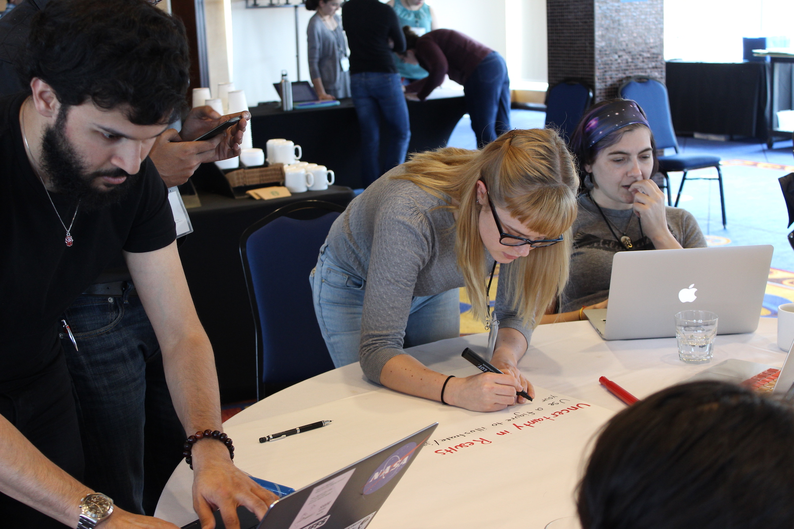

By learning science through doing science, we also develop the tools necessary to analyze and comprehend information both in the research lab and in our daily lives. For example, these tools include: asking questions, analyzing data, developing sound conclusions, acknowledging uncertainty, and communicating these aspects to others.
In addition to TAing and instructing lab courses as a graduate student, I participated in the Institute for Science and Engineering Educators Professional Development Program in 2015 and in 2016 as a Design Team Leader.
In 2016, I received the Lead Teaching Fellowship at Columbia University, during which I attended several pedagogical workshops and organized a few specifically for the Astronomy Department.
